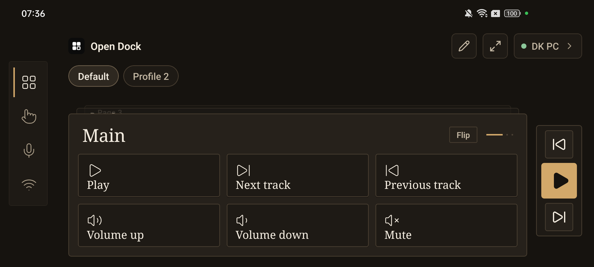
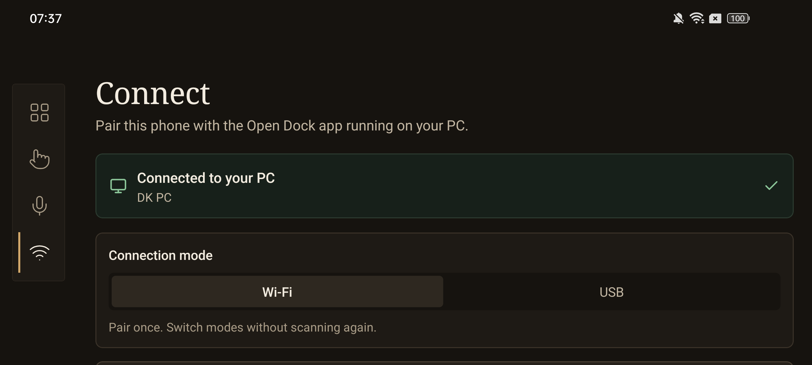
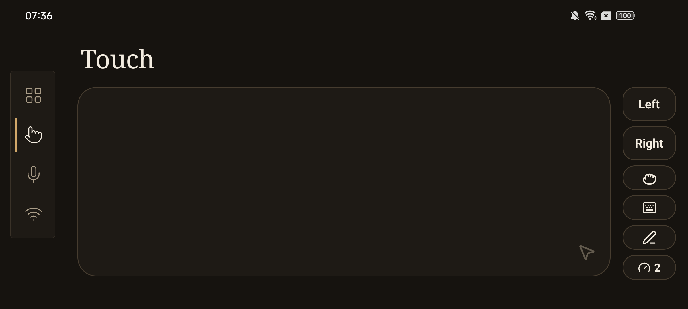
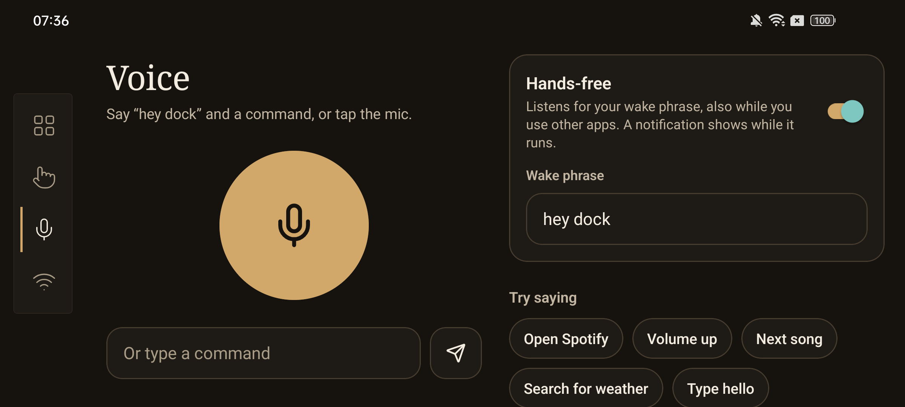

Phone control deck · PC companion
Turn any phone into a deck of buttons, widgets and gestures for your computer. Free and open source.
Download How to installWindows installer Open Dock_*_x64-setup.exe · Android OpenDock.apk

Play, skip and volume, straight from the phone.
Custom keyboard shortcuts and ordered shortcut sequences.
Launch apps and open files with one tap.
Run your own scripts and extend the deck with plugins.
Multiple pages, folders and profiles to organise buttons.
Clock, now playing, lyrics and PC stats.
Talk to your PC or use the phone as a touchpad.
Pair once by QR code. Android can switch to USB.
Pair several phones to one PC and customise each one separately. Give each device a name instead of an IP address.



Pick the style that suits your desk.
Open Dock_*_x64-setup.exe from the latest release.OpenDock.apk from the same release.The installer isn't signed, hence the Windows warning. After the first install, Open Dock updates itself.
Open Dock is free software under the GNU General Public License v3.0.
View on GitHub Download